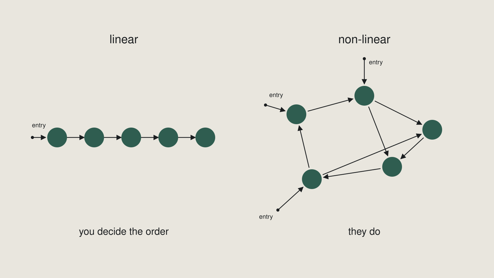

Week 10 slides · Linear and non-linear storytelling
What was on screen in class. Arrow keys or click to move.
1 / 15
Title
Week 10 — Linear and non-linear storytelling
Module summative · 5% · knowledge check
2 / 15
The whole concept
Who decides what comes next?
You, or them?
3 / 15
Both structures
Linear — one fixed order. You decide.
Non-linear — the audience chooses the path. They decide.

4 / 15
Outcomes
By the end of this week you can
- Define linear and non-linear structure in your own words
- Structure one set of material both ways
- State what each structure makes possible and what it costs
- Choose one and defend it against the alternative you rejected
5 / 15
Four words that are not synonyms
Non-linear ≠
interactive · branching · random access · modular
6 / 15
The subtler trap
Chronological ≠ linear.
Every flashback you have ever seen is linear.
Linear is about whether the order is fixed. Not whether the order is time.
7 / 15
The false non-linear
Shown in class.
8 / 15
What linear buys
Linear buys you a build.
You know what they have already seen — so you can withhold, and then reveal.
9 / 15
And charges you
And charges you their continuous attention.
If they leave at forty seconds, everything after forty seconds did not happen.
10 / 15
What non-linear buys
Non-linear buys you agency.
People go to what they actually care about.
11 / 15
And charges you
And charges you the build.
Nothing can depend on anything.
Every piece has to work cold.
12 / 15
The cost answered with a gain
"You lose control over the order — which is good, because the audience gets to choose."
That is the gain, restated.
13 / 15
Your landing page is one of these
A landing page is one of the few genuinely non-linear things you will ever build.
Most people build one without noticing they chose.
14 / 15
What is being assessed
Two things, separately.
Knowledge check — weeks 7–10
Written comparison — what each structure cost
Naming only the upside does not count.
15 / 15
The scope is on the sheet
The review sheet names exactly what is covered.
Shot sizes · frame rate and shutter · sequence settings · sync · export specifications · linear and non-linear
That is the whole list.